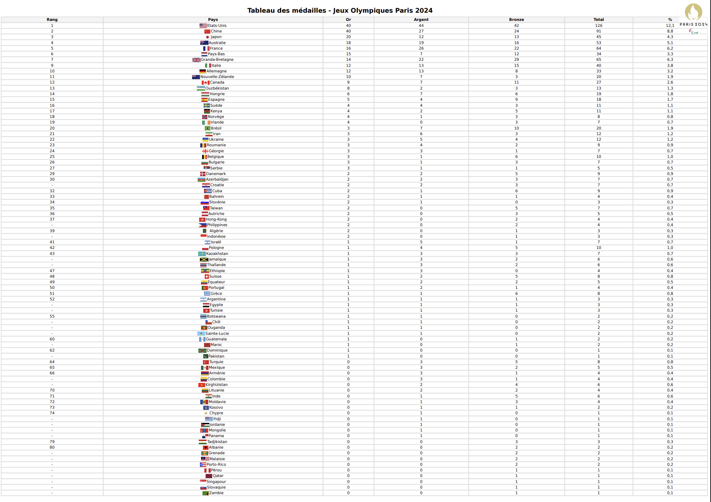

Systèmes informatiques
Ce projet a été réalisé en groupe. L'objectif était de créer des scripts permettant de formater automatiquement des images et des fichiers texte. Les données portaient sur le thème des Jeux Olympiques.
Compétence n°3 : Installation d'un poste pour le développement
Ce projet est en lien avec la compétence 3 du programme du BUT informatique : Installer, configurer, mettre à disposition, maintenir en conditions opérationnelles des infrastructures, des services et des réseaux et optimiser le système informatique d’une organisation.
Les outils utilisés :
Les étapes du projet
Dans ce projet en équipe, nous devions créer des scripts de traitement automatisé de données, afin de transformer un jeu de données selon un cahier des charges. Le projet s’est déroulé en 4 étapes distinctes.
Dans cette première étape, il fallait répertorier dans un tableau les caractéristiques du jeu de données fourni.

Dans cette seconde étape, le but était de transformer les données fournies pour qu’elles soient conformes au cahier des charges. Il fallait également fournir un document PDF résumant toutes les commandes utilisées et les étapes réalisées.
Dans cette étape, le but était de créer une chaîne de traitement automatisée pour que les données soient conformes au cahier des charges. Nous avons utilisé Docker, PHP et Bash.
Dans cette dernière étape, il fallait créer un fichier PDF avec le tableau des médailles des JO ainsi que plusieurs caractéristiques. Ce PDF devait être généré avec PHP et Bash.
